Selected Publications
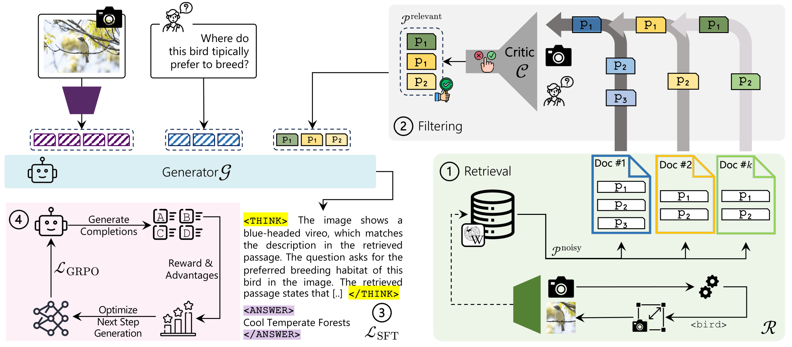
A novel Reasoning‑Augmented Multimodal RAG approach that combines coarse‑ and fine‑grained retrieval with a critic model that filters irrel‑
evant passages, ensuring high‑quality additional context. The model follows a multi‑stage training strategy leveraging reinforcement learning
to enhance reasoning over retrieved content, while supervised fine‑tuning serves only as a cold start.
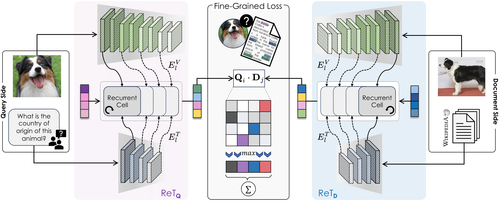
An approach enabling multimodal queries — image + text — to search multimodal document collections through a novel Transformer-based recurrent cell integrating textual and visual features across layers.
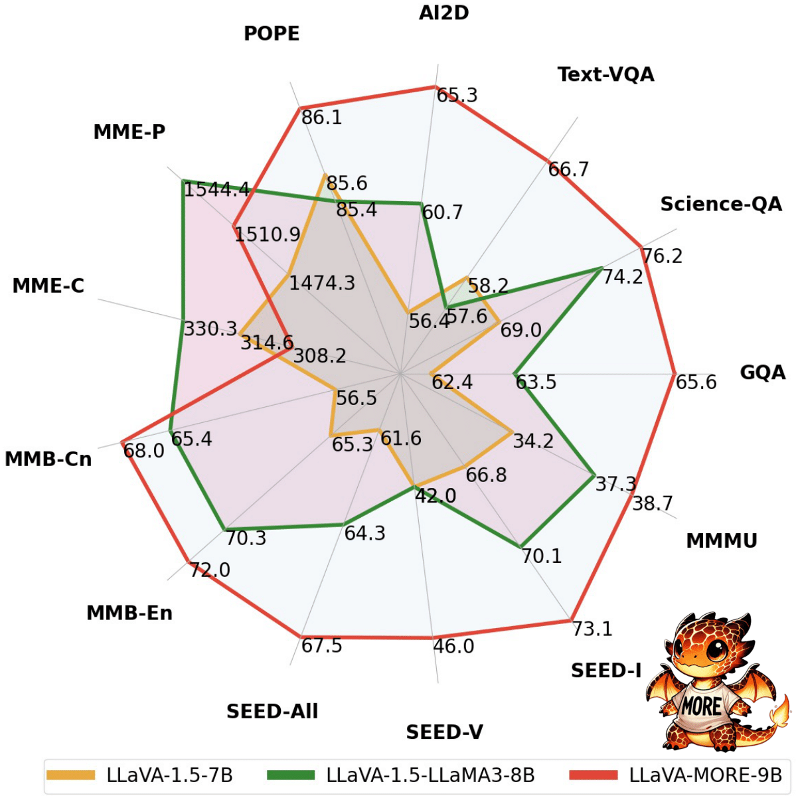
A new family of MLLMs integrating modern language models with diverse visual backbones.
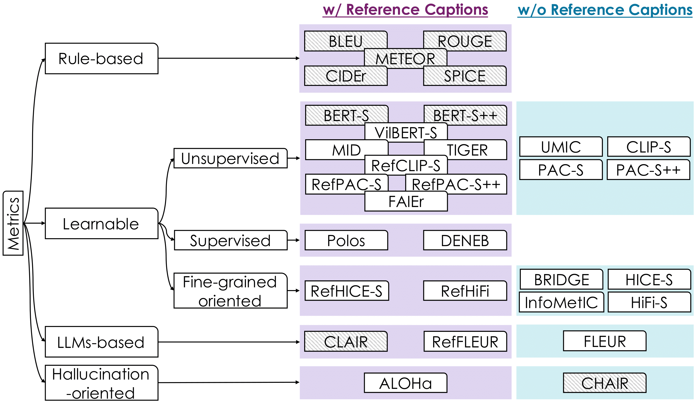
An overview of image captioning evaluation, discussing metric evolution, limitations, challenges from longer MLLM captions, and metric adaptability.
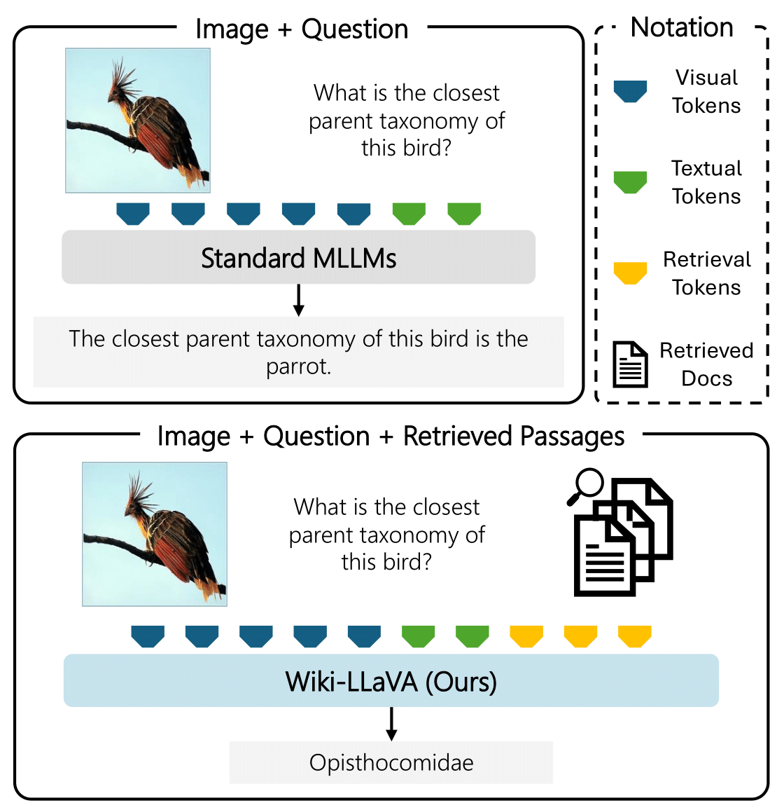
Integration of external document knowledge into an MLLM through hierarchical retrieval.
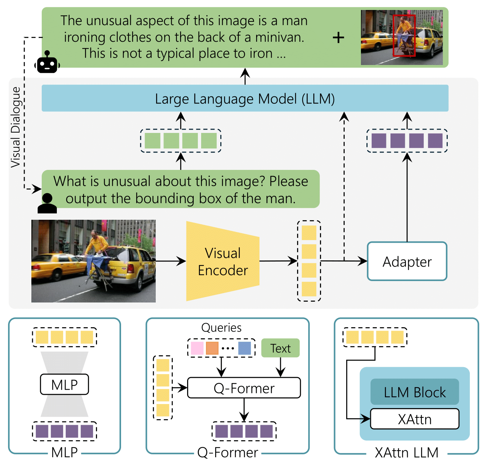
A comprehensive review of recent visual-based MLLMs, analyzing architectures, alignment strategies, and training techniques.
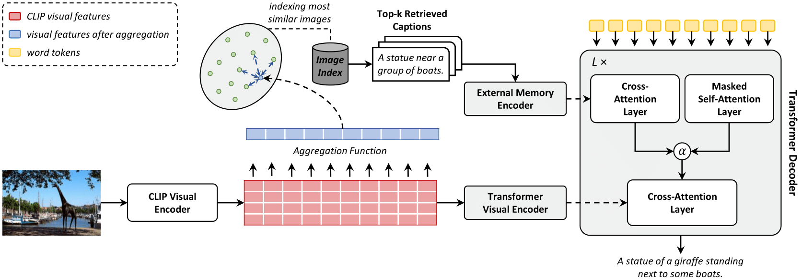
An image captioning approach with a kNN memory, with retrieval from an external corpus to aid the generation process.
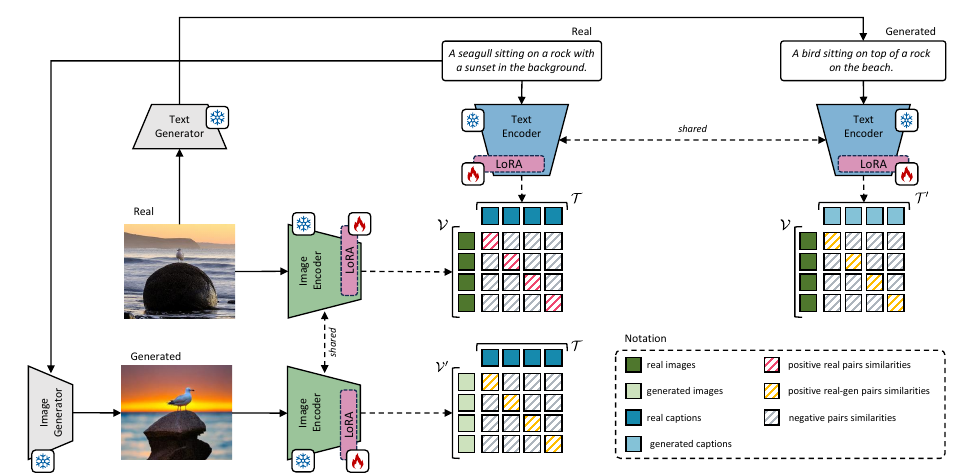
PAC-S++ strengthens CLIP-based caption evaluation with generated positive visual and textual samples, improving alignment with human judgments and serving as a reward for captioning models.
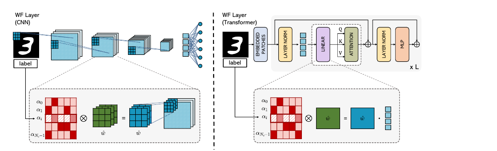
A single-round framework that uses weight-filtering layers to selectively unlearn any image class in CNNs or Vision Transformers while exposing class-component relationships.
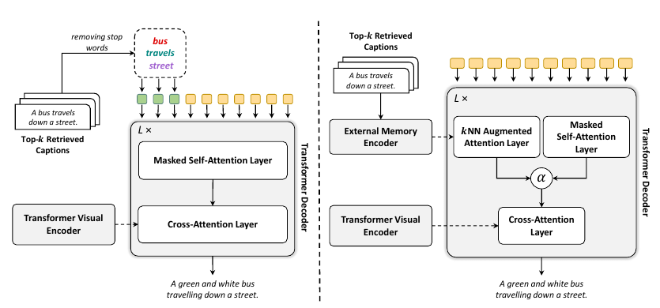
Two retrieval-augmented image captioning variants combine a visual kNN retriever with either self-attention prefixes or kNN cross-attention over captions stored in an external memory.
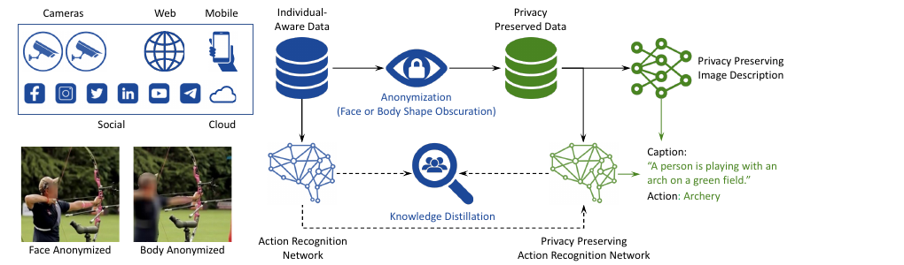
A survey and experimental perspective showing how anonymization and knowledge distillation can support action recognition and image description without exposing personal identity.